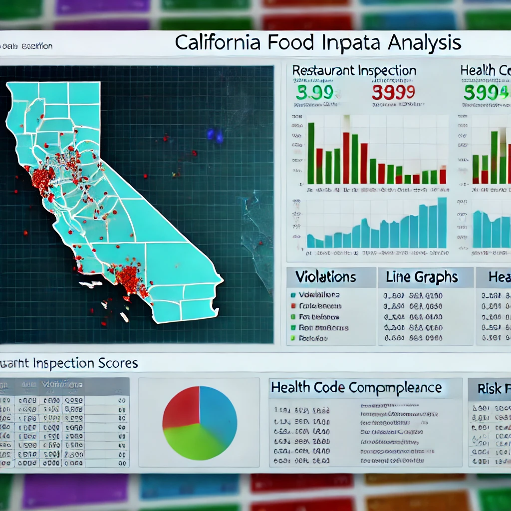
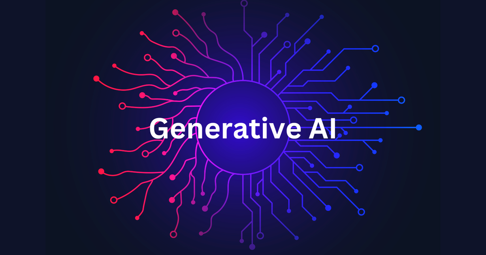
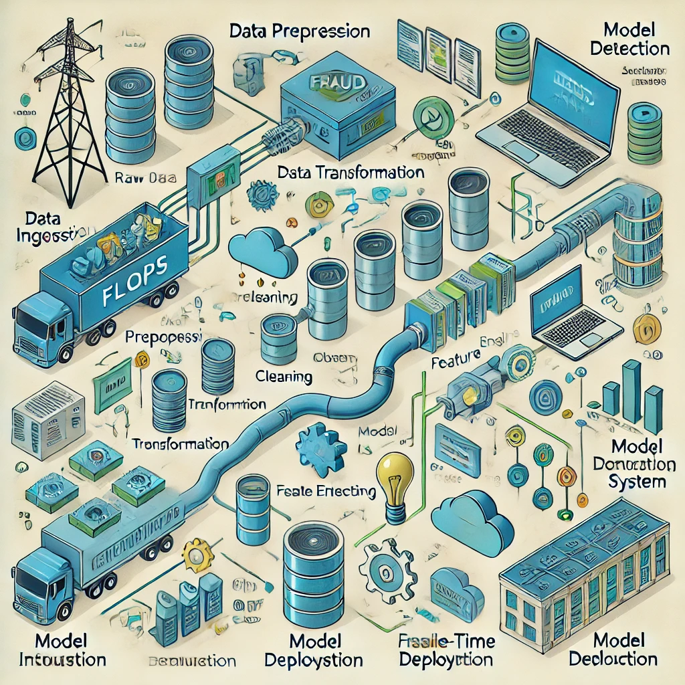

My Skills

Programming Languages
Python (Advanced), JavaScript, R, SQL, Java

Libraries & Frameworks
TensorFlow, React.js, Node.js, Express.js, scikit-learn, Tailwind CSS, Matplotlib, Seaborn, Power BI, OpenCV

Databases & Technologies
MySQL, PostgreSQL, MongoDB, DynamoDB, AWS (S3, EC2, ECR), Docker, JIRA, Tableau, Flask, MS Excel, VLOOKUP, XLOOKUP, GCP, Hugging Face Transformers, Vertex AI, Chroma DB, Pinecone Vector DB, Snowflake, Pydantic, Trafilatura
Machine Learning & AI
VGG16, Evidently AI, OpenAI API, CLIP, XGBoost, NLP, DVC, MLflow, Keras

Software Development
Next.js, React.js, Node.js, Express.js, REST APIs, System Design, Clean Architecture, API Integration, Headless CMS (Strapi)

MLOps & Deployment
AWS Fargate, SQS, Lambda, Docker, Redis Caching, Redis Rate Limiting, Backend Performance Optimization, DVC, MLflow